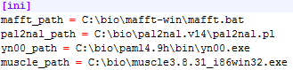

Installation¶
Python package and command line interface (IDLE) for the analysis of whole genome duplications (WGDI). The environment required for installation is python3.
Method¶
We recommend using a python installation directly by using the commands available on PyPI:
pip install wgdi
upgrade with just one terminal command:
pip install --upgrade wgdi
Or use Git to get the latest version of the source code on github, and install our program.
git clone https://github.com/SunPengChuan/wgdi.git
cd wgdi
python setup.py install
Third party software¶
Some parts of WGDI use the following additional python libraries:
After you download and install the above package. Go to the installation location of wgdi, find the conf.ini located in the wgdi folder, and change the location of its module to the location where you installed the module.
.\Python\Python37-32\Lib\site-packages\wgdi\conf.ini
We recommend installing Git to work with WGDI, so you can quickly switch working directories when you start a large number of tasks.
Uninstall¶
If you don’t need WGDI, you can uninstall with pip uninstall wgdi.